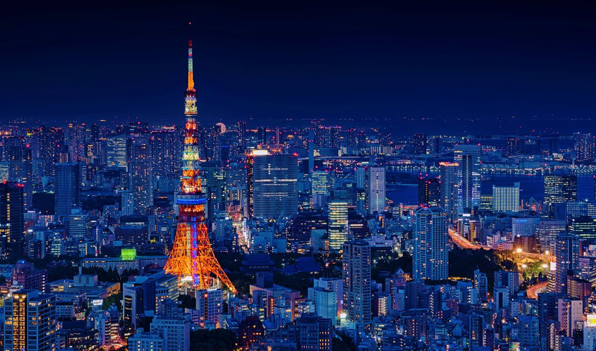

Sua próxima viagem:
Conheça Tóquio

Tóquio é a capital do Japão e sede do governo nacional. É considerada uma das maiores metrópoles do planeta e
também o centro político, econômico, educacional e cultural do Japão. A metrópole representa uma das áreas de
maior aglomeração urbana do mundo.
Descubra 3 destinos imperdíveis em Tóquio
Um Tour Rápido pelos Ícones de Tóquio: Shibuya Starbucks, Shinjuku Street e Takeshita Street
Tóquio, a vibrante capital do Japão, é um caldeirão cultural que oferece uma infinidade de experiências
únicas. Entre os muitos pontos turísticos, três se destacam por sua energia e representatividade: o Starbucks
de Shibuya, a Shinjuku Street e a Takeshita Street. Vamos dar uma olhada em cada um deles:
-
Starbucks de Shibuya: Mais do que um café
- Um ponto de encontro: Localizado no coração de Shibuya, um dos bairros mais
movimentados de Tóquio, o Starbucks de Shibuya se tornou um ícone da cidade.
- Vista panorâmica: A cafeteria oferece uma vista privilegiada do famoso cruzamento de
Shibuya, onde milhares de pedestres se cruzam a cada ciclo do semáforo, criando um espetáculo visual
único.
- Cultura pop: O local é um ponto de encontro para jovens, turistas e amantes da
cultura pop japonesa, tornando-o um local perfeito para observar a vida cotidiana da cidade.
-
Shinjuku Street: O coração da metrópole
- Um labirinto de luzes: Shinjuku é um distrito de Tóquio conhecido por sua vida
noturna agitada, arranha-céus e lojas de departamento.
- Diversidade: A Shinjuku Street oferece uma variedade de experiências, desde
restaurantes e bares até centros comerciais e teatros.
- Negócios e prazer: Durante o dia, a área é um centro financeiro, enquanto à noite se
transforma em um destino popular para compras e entretenimento.
-
Takeshita Street: A meca da moda jovem
- Harajuku em seu auge: Localizada em Harajuku, a Takeshita Street é famosa por suas
lojas de roupas, acessórios e produtos kawaii (fofos) direcionados ao público jovem.
- Cultura pop japonesa: A rua é um reflexo da cultura pop japonesa, com suas lojas de
cosplay, cafés temáticos e moda alternativa.
- Uma experiência única: Caminhar pela Takeshita Street é como entrar em um mundo de
fantasia, onde a criatividade e a individualidade são celebradas.